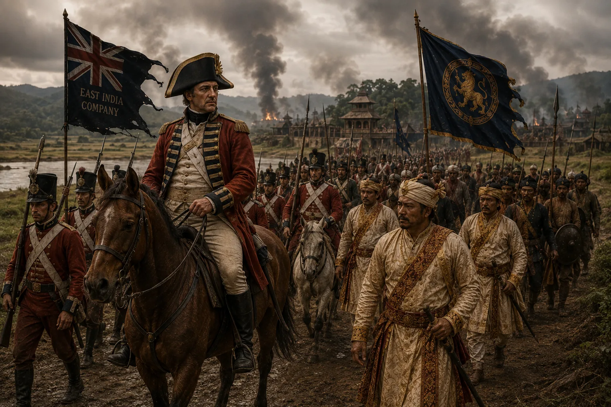

British Military Intervention: Captain Thomas Welsh Expedition
1792–1794 · The Moamoria risings

Responding to Gaurinath's appeal, British East India Company sends 6 companies of sepoys under Captain Thomas Welsh who defeat rebels and re-enter Rangpur.
Sources have not yet been catalogued for this record.
People: Captain Thomas Welsh, Lord Cornwallis, Gaurinath Singha (Suhitpangphaa)